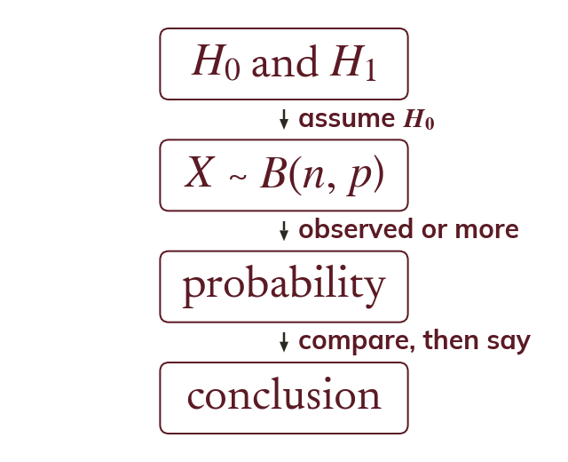
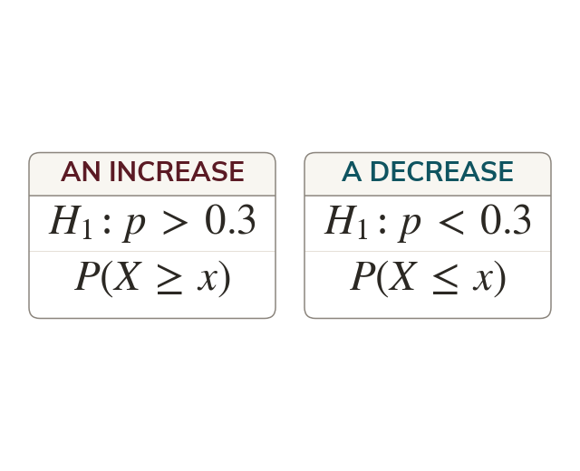
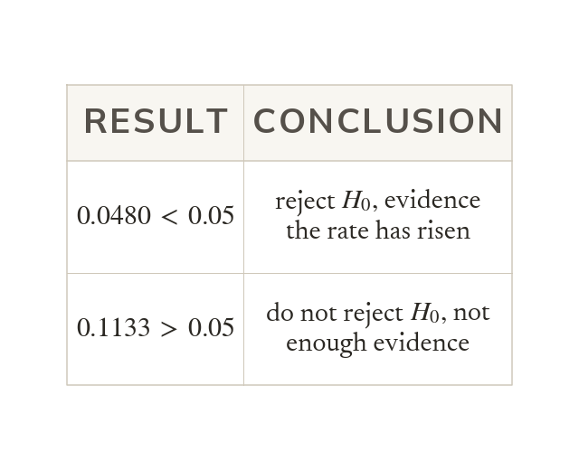
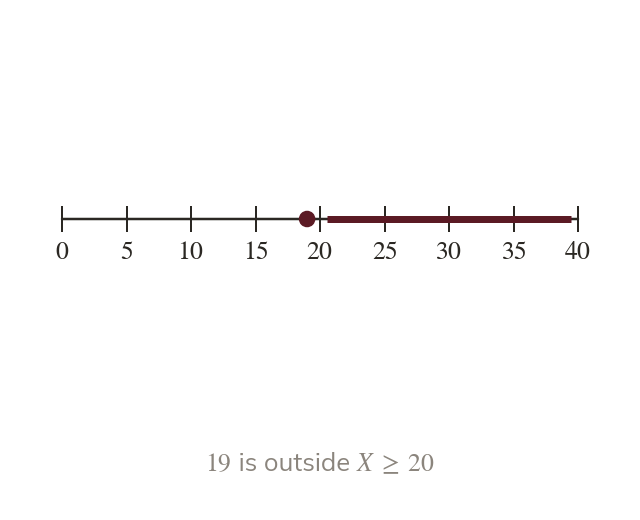
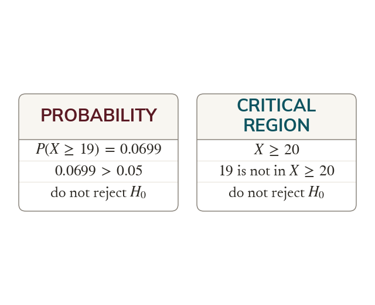
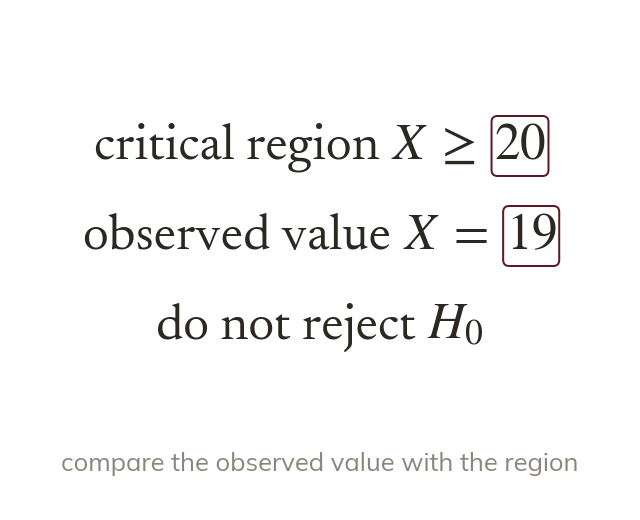

The steps of a test
Write the hypotheses, then assume to get the model for X. Find the probability, compare it with the level, and conclude in context.
A one-tailed test checks a claim that a proportion has gone up or gone down, and exam questions ask for it in full, from the hypotheses to a conclusion in context. The same steps with two tails come next lesson.
Work down the page at your own pace. Write every answer in your book first, then click to check it.
Read each card, then follow the worked examples one step at a time.

Write the hypotheses, then assume to get the model for X. Find the probability, compare it with the level, and conclude in context.

The direction of chooses the tail. For : find and for : find

First say whether is rejected. Then say what that means for the claim, in the words of the question.
Pick an answer. If it's wrong, the feedback tells you which mistake it was.
Write the blanks in your book first, then tap each one to check.
Read each card, then follow the worked examples one step at a time.

Find the critical region for the test first. Then reject only if the observed value lies in it.

The probability route and the critical region route always agree. A value in the critical region has a tail probability at most the significance level.

Write the critical region for X, then place the observed value. Say whether it is in the region before the conclusion.
Pick an answer. If it's wrong, the feedback tells you which mistake it was.
Write the blanks in your book first, then tap each one to check.
Finished? Next lesson: 12.S7.4 Two-Tailed Tests.
For each skill, tap the one that is true for you today. Your Revise pages start with anything you mark Not yet.
Your ratings are saved on this device only.
Log in, then search for a code to practise that skill.